HISTENTROPY2 - Entropy feature derived from (co)occurrence matrices.
Contents
Description
Compute the entropy feature in bits (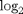 used), as defined in [HSD73] from (co)occurrence matrices.
This feature measures the randomness E of greylevel distributions as [ST99]:
- GLCM case - 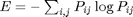,
- GLSDV case - 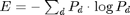,
- GLOV case - 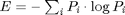,
where the 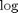 is taken in base 2 and where the matrices (or vectors in the last two cases) 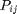, 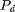 and 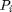 represent respectively the probabilities of cooccurring greylevel pair 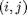, of occurring greylevel difference 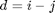 and of occurring greylevel 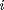.
Syntax
E = HISTENTROPY2(Pij); E = HISTENTROPY2(Pd); E = HISTENTROPY2(Pi);
References
See HISTCONTRAST.
See also
Related: HISTCONTRAST, HISTENERGY, HISTHOMOGENEITY, HISTVARIANCE, HISTENTROPY10, HISTMAXIMUM, HISTMEAN, HISTDISSIMILARITY, HISTIDIFFERENCE, HISTCORRELATION, LOCALGLCM2D, LOCALGLOV2D, LOCALGLSDV2D.
Function implementation
function E = histentropy2(pIJ, varargin) pIJ(pIJ==0) = 1; % pIJ = pIJ + (pIJ==0); E = - sum(log2(pIJ(:)) .* pIJ(:)); end % end of histentropy2